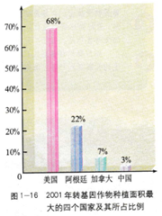
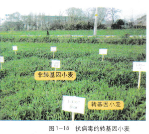
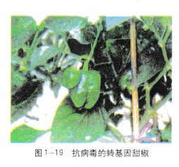

1.3 基因工程的应用
基因工程自20世纪70年代兴起后，在短短的30年间，得到了飞速的发展，目前已成为生物科学的核心技术。基因工程在实际应用领域—农牧业、工业、环境、能源和医药卫生等方面，也展示出美好的前景。
植物基因工程硕果累累
植物基因工程在农业中的应用发展迅速。从1996～2001年，在短短的5年中，全世界转基因作物的种植面积 就增长了30倍。以转基因植物研究、开发和应用为标志的农业技术革命，已经在一些国家展开。2001年，就世界范围来看，转基因植物种植面积首次突破5x106hm2。其中，转基因大豆、棉花、油菜、玉米已进入大规模商业化应用阶段，这四种转基因作物种植面积占相关作物种植面积的比例已达到：大豆63%，玉米19%，棉花13%，油菜5%。我国转基因作物的种植面积也迅速增长，目前已位居世界第四（图1- 16)。

植物基因工程技术主要用于提高农作物的抗逆能力(如抗除草剂、抗虫、抗病、抗干旱和抗盐碱等），以及改良农作物的品质和利用植物生产药物等方面。
抗虫转基因植物
全世界每年因虫害造成农作物的损失约占总产量的13%，达数千亿美元。对农业害虫的防治，大多是依靠化学农药。大量使用化学农药不仅造成了严重的环境污染，损害了人类健康，而且大大增加了生产成本。因此，从某些生物中分离出具有杀虫活性的基因，将其导入作物中，使其具有抗虫性，已成为防治作物虫害的发展趋势。目前，已问世的转基因抗虫植物主要有水稻（图1-17)、棉、玉米、马铃薯、番茄、大豆、蚕豆、烟草、苹果、核桃、杨、菊花和白花三叶草等。用于杀虫的基因主要是Bt毒蛋白基因、蛋白酶抑制剂基因、淀粉酶抑制剂基因、植物凝集素基因等。例如，我国转基因抗虫棉就是转入Bt毒蛋白基因培育出来的，它对棉铃虫具有较强的抗性。
生物技术资料卡
可用于转基因植物的抗虫基因
Bt毒蛋白基因是从苏云金芽孢杆菌中分离出来的抗虫基因。当害虫食用含有转基因的植物时, Bt基因编码的蛋白质会进入害虫的肠道，在消化酶的作用下.蛋白质能够降解成相对分子质量比较小的、有毒的多肽。多肽结合在肠上皮细胞的特异性受体上，会导致细胞膜穿孔，细胞肿胀裂解，最后造成害虫死亡。由于Bt毒蛋白对哺乳动物无毒害作用，因而广泛用于抗虫转基因植物。
蛋白酶抑制剂基因广泛存在于植物中，它产生的抑制剂可与害虫消化道中的蛋白酶结合形成复合物，从而阻断或降低蛋白酶的活性，使昆虫不能正常消化食物中的蛋白质。这种复合物还能剌激昆虫分泌过量的消化酶，引起害虫的厌食反应。
淀粉酶抑制剂基因产生的淀粉酶抑制剂可以抑制昆虫消化道中的淀粉酶活性，使害虫不能消化所摄取的淀粉，从而阻断害虫的能量来源。
植物凝集素基因控制植物合成一种糖蛋白，这种糖蛋白可与昆虫肠道黏膜上的某种物质结合，从而影响害虫对营养物质的吸收和利用。
抗病转基因植物
植物像人一样也会生病。引起植物生病的微生物称为病原微生物，主要有病毒、真菌和细菌等。例如，许多栽培作物由于自身缺少抗病毒的基因，因此，用常规育种的方法很难培育出抗病毒的新品种，而基因工程技术，为培育抗病毒植物品种开辟了新的途径。目前，人们已获得抗烟草花叶病毒的转基因烟草和抗病毒的转基因小麦（图1-18)、甜椒（图1-19)、番茄等多种作物。

抗逆转基因植物
环境条件对农作物的生产会造成很大影响。例如，盐碱、干旱、低温、涝害等不利的环境条件，是造成低产、减产的常见因素。目前，全球的盐碱和干旱地区分别占陆地面积的1/3,还有许多地区属于高寒地区。这些不利的环境条件也会对农业生产造成影响。由于盐碱和干旱对农作物的危害与细胞内渗透压调节有关，目前科学家们正在利用一些可以调节细胞渗透压的基因，来提高农作物的抗盐碱和抗干旱的能力，这在烟草等植物中已获得了比较明显的成果。科学家们还研究开发出了一批耐寒作物，使它们在寒冷的环境条件下，良好地生长。例如，将鱼的抗冻蛋白基因导入烟草和番茄(图1 -20)，使烟草和番茄的耐寒能力均有提高。此外，将抗除草剂基因导入大豆、玉米等作物（图1 - 21)，喷洒除草剂时，杀死田间杂草而不损伤作物。